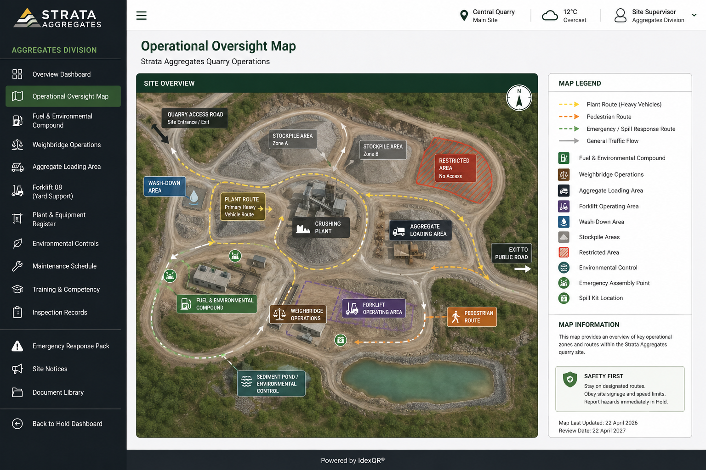

Hold / Strata Aggregates
Operational Oversight Map
Plant movement, environmental controls, stockpile areas and site routing across the Strata Aggregates operational site.

Hold / Strata Aggregates
Plant movement, environmental controls, stockpile areas and site routing across the Strata Aggregates operational site.
